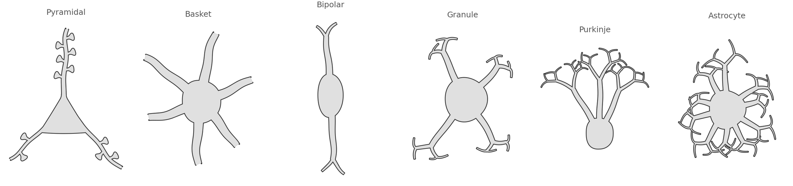
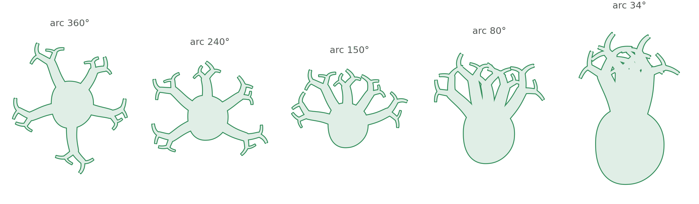
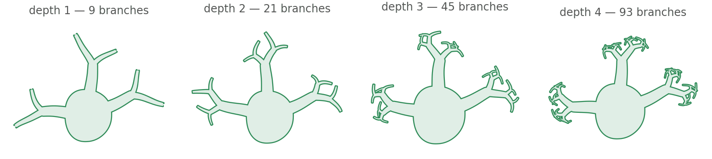
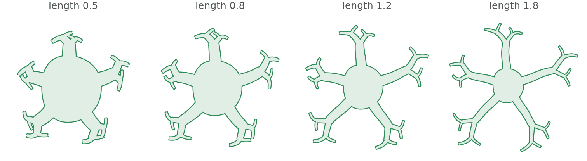

All examples Neuroscience
Radial body plan
A soma with processes leaving it. Five named cells are this shape at five settings — and so is the one you need next.
neuro.RadialCell

How many processes leave, over what arc, and how often they branch. Those three carry every cell on this page.
Named by silhouette, not by colour

The arc

Branching depth

Proportion

Setting one yourself
import biodraw as bd
cell = bd.neuro.RadialCell(
dendrites=5, # how many processes leave the soma
arc_deg=150.0, # over what arc — 360 is a star, a wedge is a fan
start_deg=15.0, # where that arc begins, counter-clockwise from +x
length=1.1, # process length, against a soma radius of ~0.4
forks=0.5, # where along a process it splits, or None for plain
depth=3, # how many generations of splitting
seed=1, # fixes the jitter, so the figure regenerates
)
cell.draw(ax=ax, wall_lw=0.85)
cell.fit(ax, pad=0.22)
# ...or take one of the five that are already named
bd.neuro.Purkinje() # or Basket, Bipolar, Granule, AstrocyteEvery figure above is output, not a stored asset —
drawn by radial_cell/build.py, in Python, on a matplotlib axes.